THE OPEN WORKSHOP / MAKER FAIRE KOCHI — specimen (offline)
A city made of
working parts.
01 / Colour
paper
#f4efdf
#f4efdf
ink
#20251f
#20251f
blue
#2854d9
#2854d9
red
#ef432d
#ef432d
yellow
#f7c928
#f7c928
maker-red
#ed1c24
#ed1c24
maker-blue
#00aeef
#00aeef
02 / Type
The core construction parts
Start with a template.
Build the kinetic language with beams, elbows and wheels.
Rigid parts / visible connections / movement at the joints
കൊച്ചി
03 / Parts
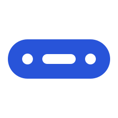
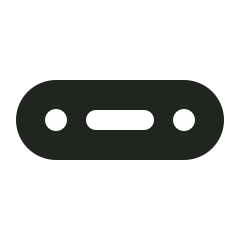
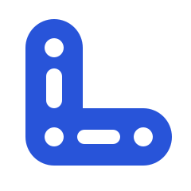
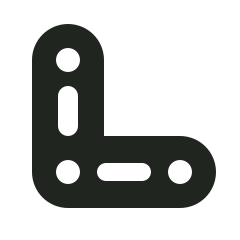
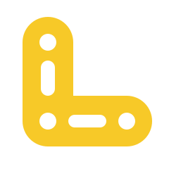
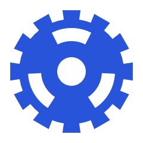
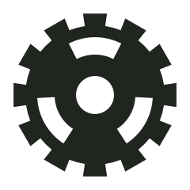
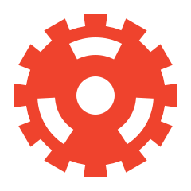
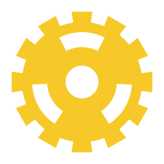
04 / Assemblies
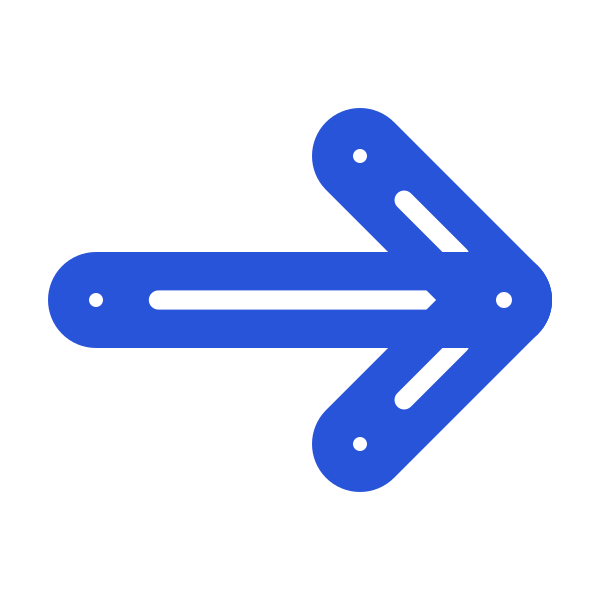
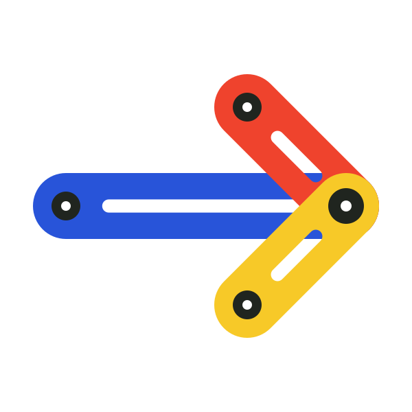
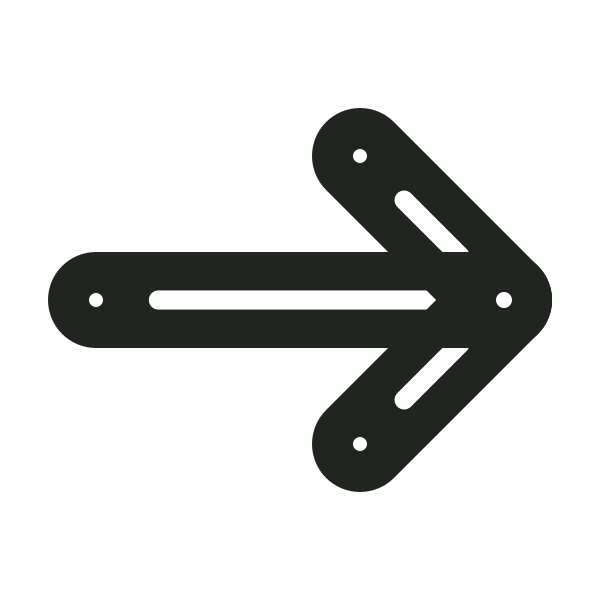
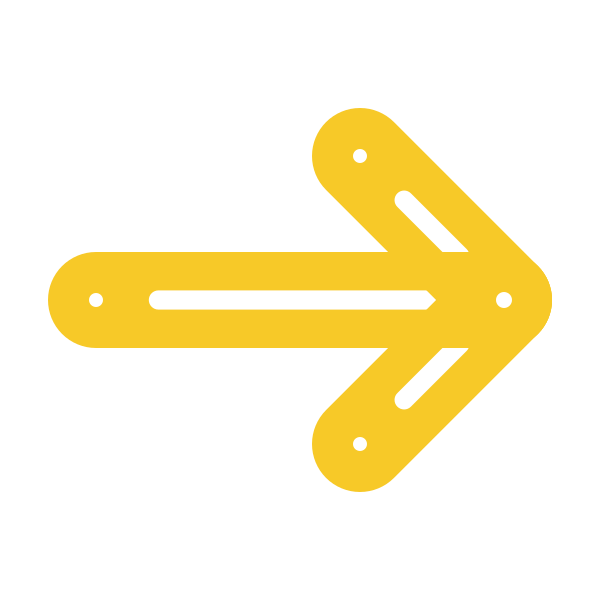
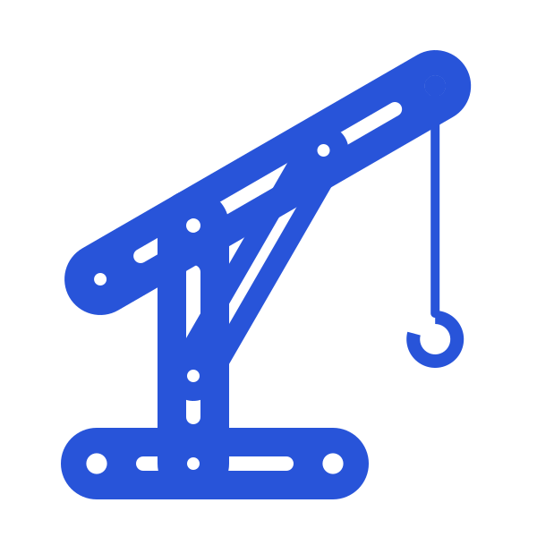
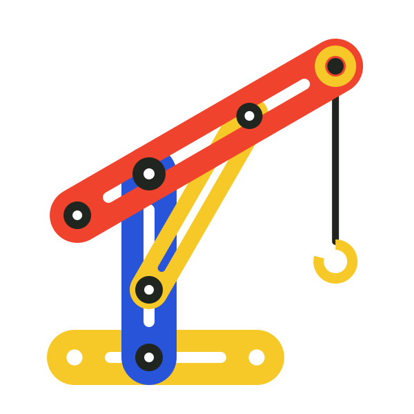
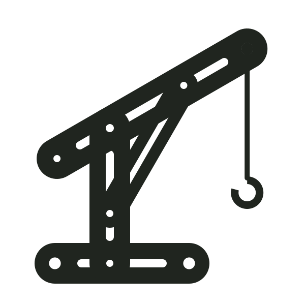
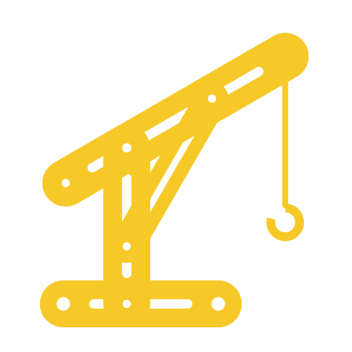
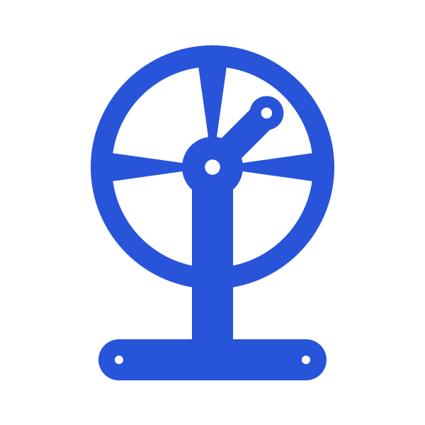
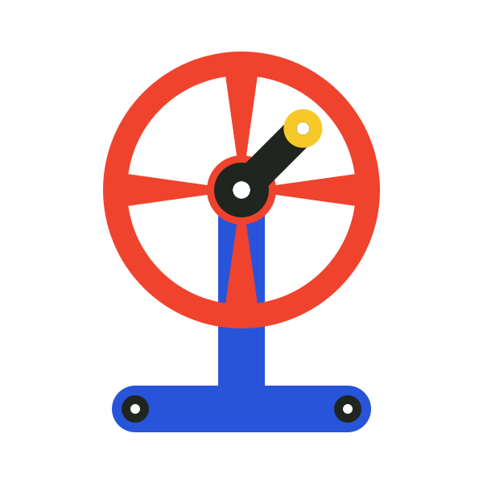
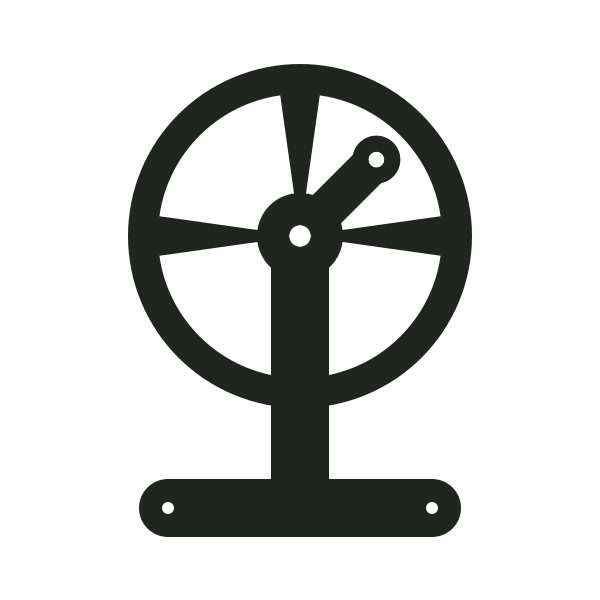
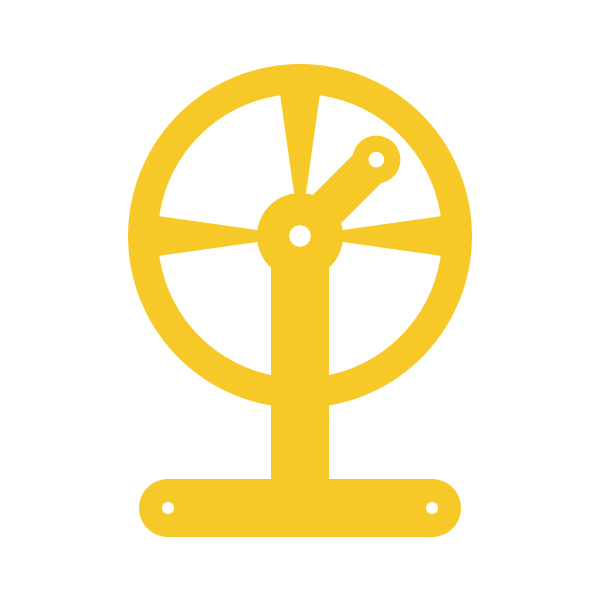
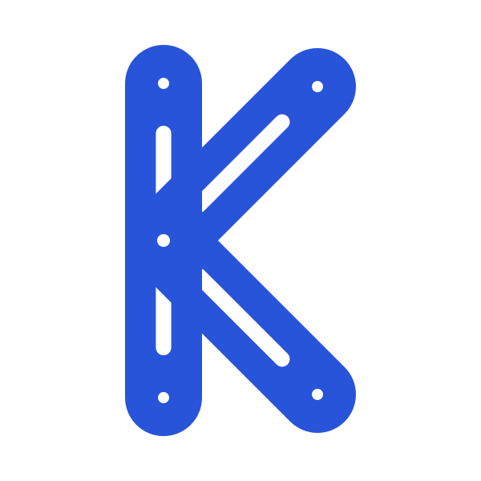
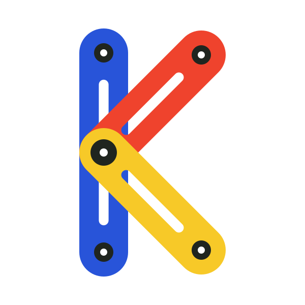
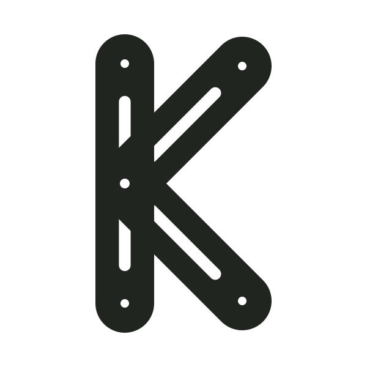
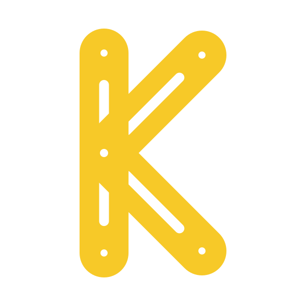
05 / Wayfinding
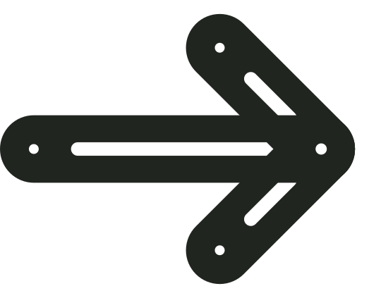
